Finite differences are well-established numerical methods for solving differential equations, but they were limited to structured meshes. The generalized finite differences (GFDs) extend the classical finite differences to unstructured meshes with high-order accuracy. In this paper, we propose a GFD method for elliptic PDEs, and tightly integrate it with a multigrid solver. We refer to this integrated approach as multigrid GFD. Specifically, our method discretizes the PDE and the boundary conditions using GFD to obtain a sparse linear system
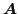
is in general asymmetric and may be singular for PDEs with Neumann or periodic boundary conditions. We solve the resulting linear system using a hybrid geometric+algebraic method, or HyGA. The core of HyGA is a geometric multigrid method, which rediscretizes the PDE using GFD over a series of hierarchical meshes, combined with an algebraic multigrid at the coarsest level.We develop GFD methods based on a weighted least squares (WLS) formulation locally over a weighted stencil at each point, which generalizes the classical interpolation-based finite differences. We have shown recently that the WLS can deliver the same order of accuracy as the interpolation-based approximations, while delivering superior stability, flexibility, and robustness for multivariate approximations over irregular unstructured meshes. The GFD method for PDEs is formulated as follows. Consider a general form of linear, time-independent partial differential equations
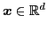
for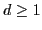
. Let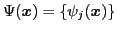
denote the set of Dirac delta functions at the vertices of a mesh. We obtain a linear equation for each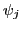
as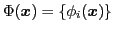
to approximate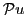
as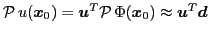
, where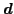
is obtained from weighted least squares over the stencil around point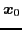
. Suppose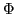
and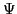
are both stored in column vectors. Then in (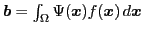
.To construct the geometric multigrid GFD, which is the core of our multigrid GFD approach, we derive the restriction and prolongation operators rigorously for hierarchical meshes. Specifically, let
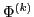
denote the set of basis functions on the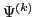
denote the Dirac delta functions on the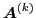
denote the coefficient matrix at the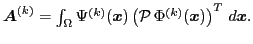
In a two-level setting, let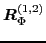
denote a restriction matrix of the functional space such that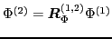
, where with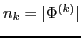
. Similarly,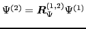
for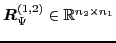
. We show that the restriction matrix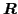
and the prolongation matrix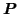
in a two-grid method are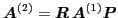
. In other words, corresponds to an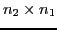
permutation matrix (i.e., an injection operator) that selects the entries in the residual vector corresponding to the coarse-level nodes in the fine-level mesh. is the transpose of of the restriction operator from the basis functions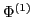
to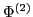
, and it would correspond to the interpolation of nodal values if were composed of Lagrange basis functions. Applying these operators to adjacent grids in a multilevel method, we then obtain a geometric multigrid for GFD, where the coefficient matrices at all levels are obtained directly from GFD discretizations without performing sparse matrix-matrix multiplications. By coupling this geometric multigrid with algebraic multigrid at the coarsest level, our proposed HyGA method then combines the rigor, high accuracy and runtime-and-memory efficiency of geometric multigrid with the flexibility of algebraic multigrid, and at the same time it is relatively easy to implement.In this work, we also investigate the convergence properties of the multigrid solver for the GFDs of elliptic PDEs. We show the multigrid solver may fail to converge for high-order GFD discretizations when using Jacobi or Gauss-Seidel iterations as smoothers. To overcome this issue, we propose new weighting schemes for WLS to improve the diagonal dominance of the linear system from the GFD, and also adopt a damped Gauss-Seidel iteration to enable more robust convergence of multigrid methods. We present the derivations and the numerical experimentations of our method for a number of test problems with various boundary conditions.